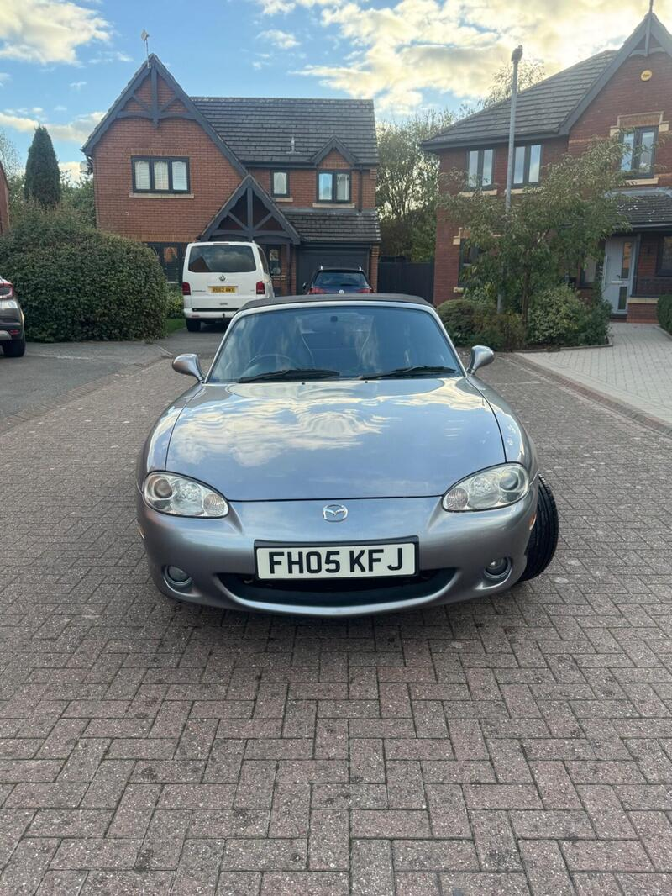
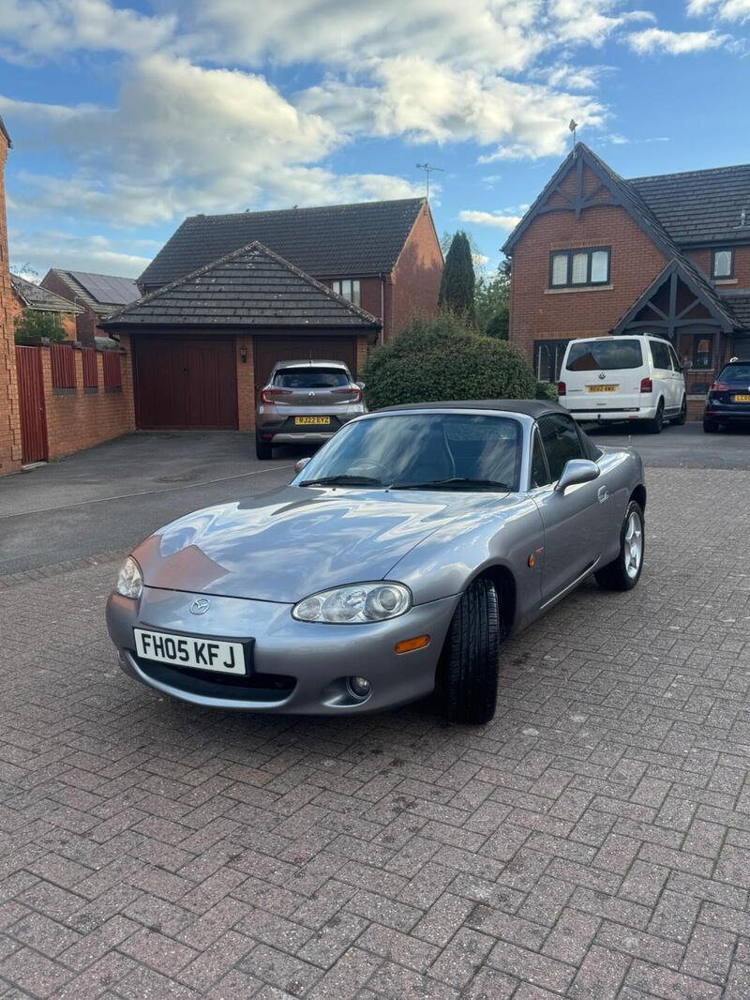
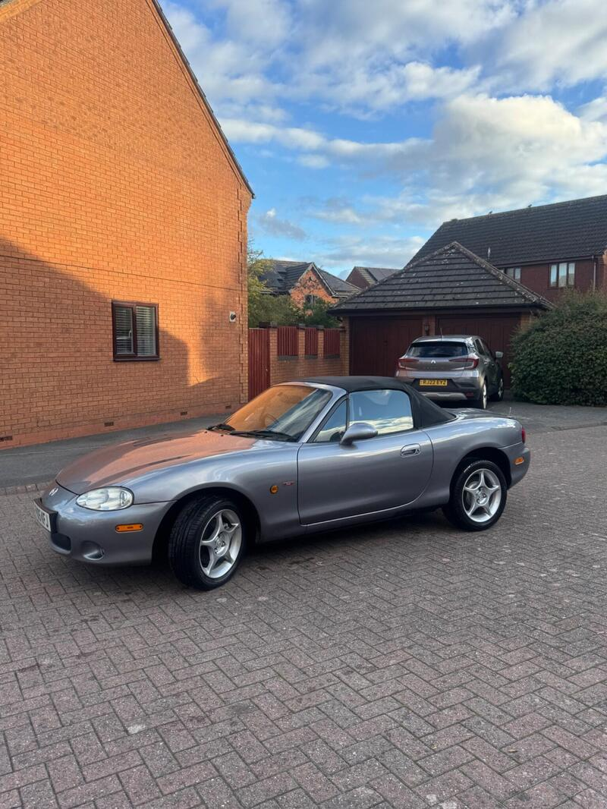

← All NB-FLRanked #3 of 28 for value




Seller photos from the AutoTrader ad.
✓ Checked 12 Oct
2005 · Icon
2005 MX-5 1.8 Icon
Lots of fresh parts for £3,500. A decent buy.
£3,50066,500 miles · Swindon
View on AutoTrader ↗Key facts
| Price | £3,500 |
|---|---|
| Year | 2005 |
| Miles | 66,500 |
| Variant | 1.8 Icon |
| Edition | Icon |
| Engine | 1.8 |
| Colour | Grey |
| Registration | 2005 (05 reg) |
| Owners | 7 owners |
| Seller | Private seller |
| Location | Swindon |
| From Poole | ~75 mi (estimate) |
| Source | AutoTrader, checked 12 Oct 2026 |
Why buy it
- Brand new service and MOT, lots of recent parts (ad)
Things to check
- 7 owners, part service history
7 owners, part service history
- Mk2.5 weak spots
Sills, rear arches and chassis rails for rust, the hood seams, and when the cambelt was last changed.
Seller says (extract)
“2005 Mazda MX5 1.8L manual 66500 miles 2 keys Part service history - stacks of receipts/work Brand new service and MOT Recent work - last 1k miles all receipts. Both front ball joints Both rear anti roll joints Rear discs and pads and handbrake cable Rocker cover gasket Clutch kit…”